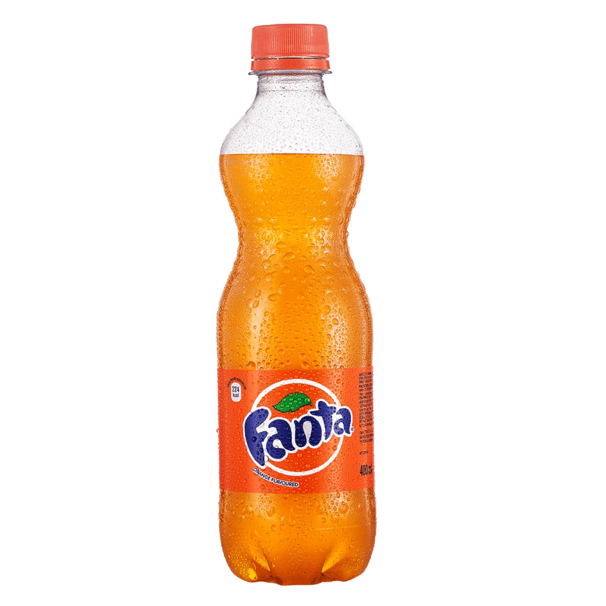

Fanta

Fanta is a refreshing soft drink known for its fruity flavor and sparkling sensation. Loved by millions of people around the world, it brings energy and excitement with every sip. Its bright colors and sweet taste make it a perfect drink for relaxing moments and fun occasions.
One of the reasons why Fanta is so popular is the variety of flavors it offers. From the classic orange flavor to tropical and citrus inspired drinks, each bottle delivers a unique and refreshing experience. The fizzy texture and fruity aroma create a drink that feels both playful and satisfying.
Fanta is often enjoyed during meals, parties, and gatherings with friends and family. Its vibrant appearance and refreshing bubbles make it a favorite choice for people looking for a drink that combines sweetness and freshness in a single bottle.
Over the years, Fanta has become more than just a soft drink. It represents fun, creativity, and positive energy. With its colorful identity and delicious taste, Fanta continues to bring joy to people of all ages around the world.